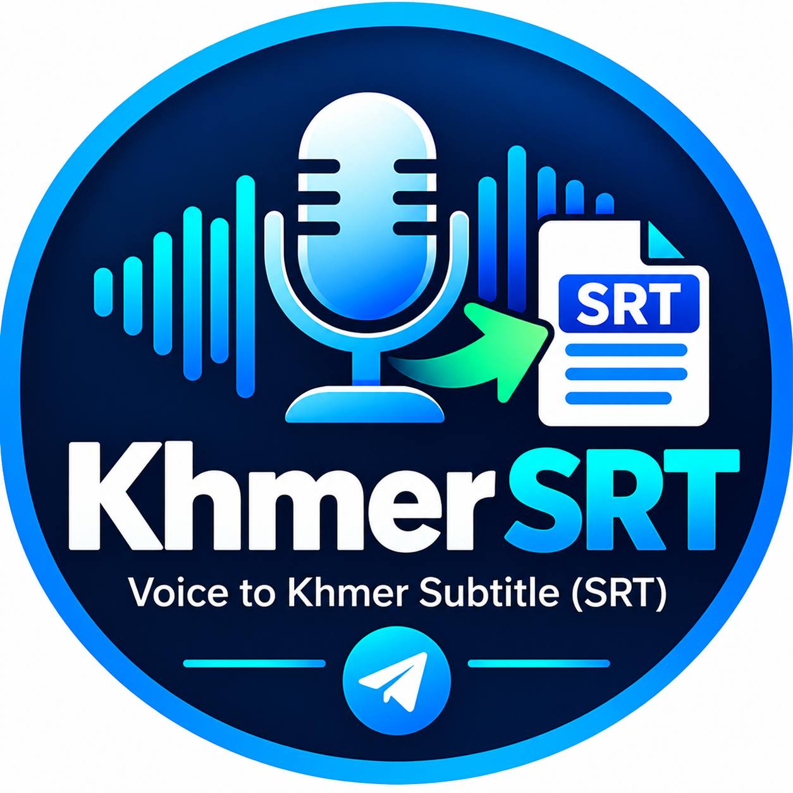
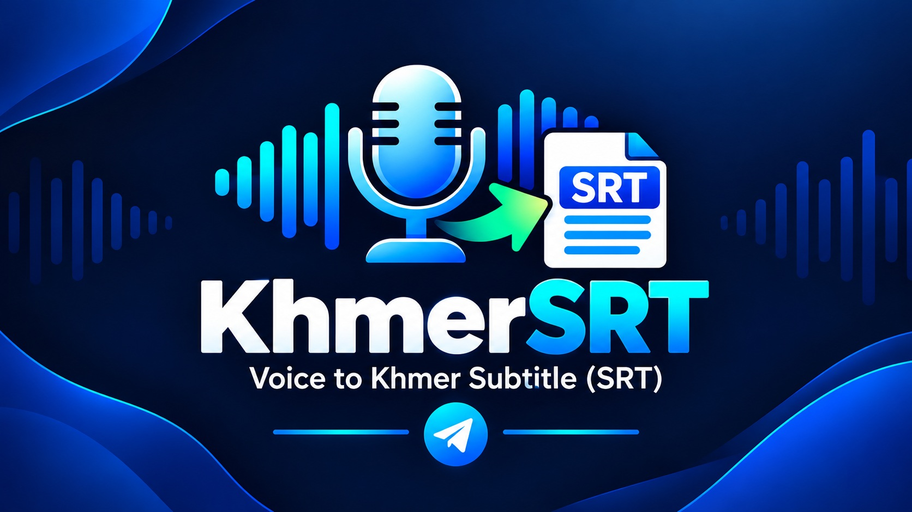

🤖
ដំណើរការដោយ AI
ជួយស្គាល់សំឡេង និងបម្លែងទៅជាអក្សរខ្មែរ។

KhmerSRT
KhmerSRT ប្រើ AI ជួយបម្លែងសំឡេងទៅជាអត្ថបទខ្មែរ និងឯកសារចំណងជើងរង SRT ដើម្បីសន្សំពេលវេលា និងកាត់បន្ថយការវាយអក្សរដោយដៃ។
ជួយស្គាល់សំឡេង និងបម្លែងទៅជាអក្សរខ្មែរ។
ទទួលបានឯកសារចំណងជើងរង សម្រាប់ប្រើក្នុងការកែសម្រួលវីដេអូ។
កាត់បន្ថយការវាយអក្សរដោយដៃ និងធ្វើឱ្យការងារងាយស្រួលជាងមុន។
KhmerSRT · AI Khmer Subtitle